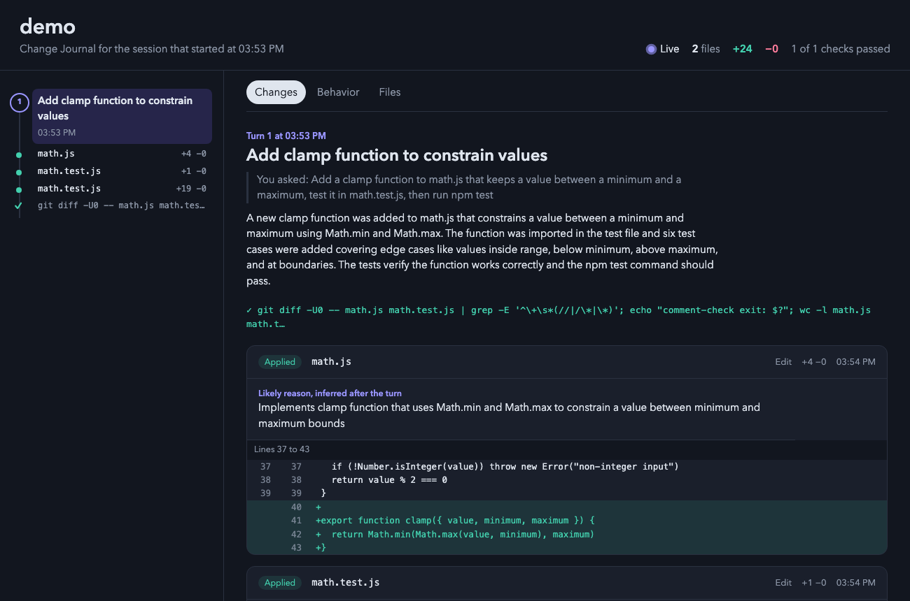
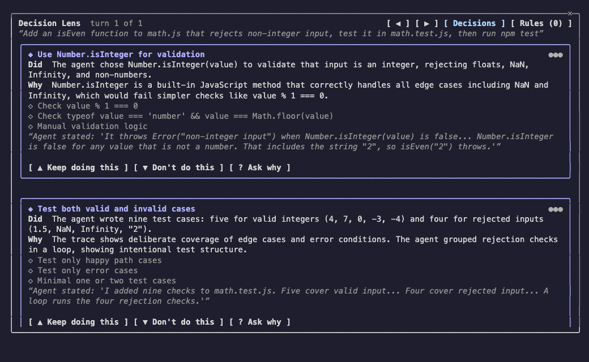
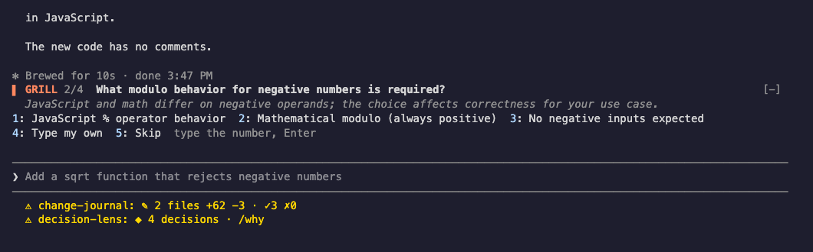
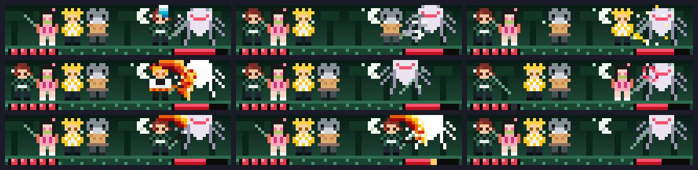
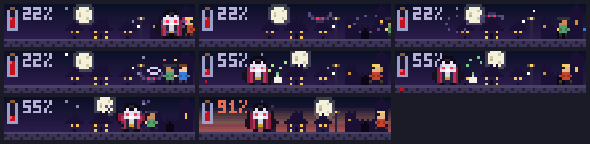

samurai-dojo
A Claude samurai cuts down a Codex or Gemini alien for every tool call Claude makes.

Each game preview is rendered by the mod's own simulation. The useful mods show captures from real sessions.
A live HTML page that shows every change Claude makes, with diffs, the reason for each edit, checks, and before/after behavior flows.

See the decisions Claude made in each turn, why it made them, and steer future turns with keep and avoid rules.

While Claude works on your task, a sharp partner asks the questions that change the result. Answers reach Claude mid-turn. Brainstorm and side chat modes too.

A Claude samurai cuts down a Codex or Gemini alien for every tool call Claude makes.
Tanjiro, Nezuko, Zenitsu, and Inosuke fight their way to Muzan as you and Claude work. The story continues every session.

A vampire feeds on every tool call Claude finishes while the moon tracks how full the context window is. Dawn means it is time to compact.

Every file that changes becomes a crop: Claude's edits and yours grow a farm above the prompt, tests bring sun or storms, and passing turns fill the barn.

A fox spirit that lives on your work: passing tests feed it, finished turns cheer it, and it grows up to nine tails.